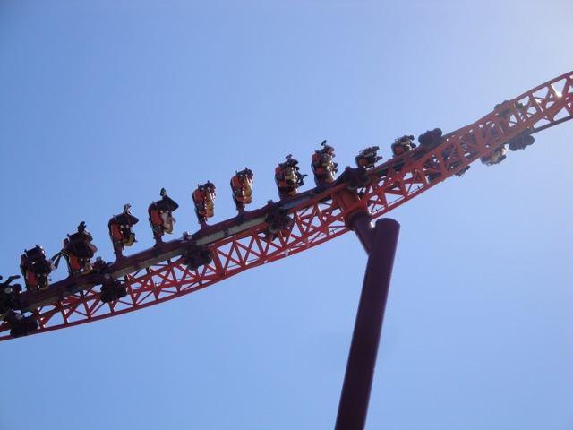
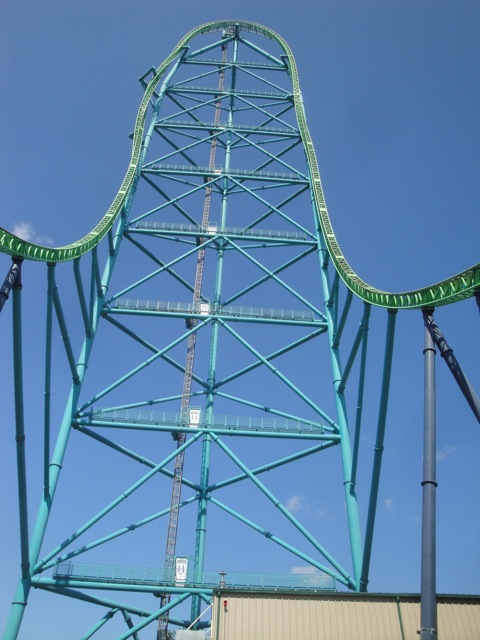
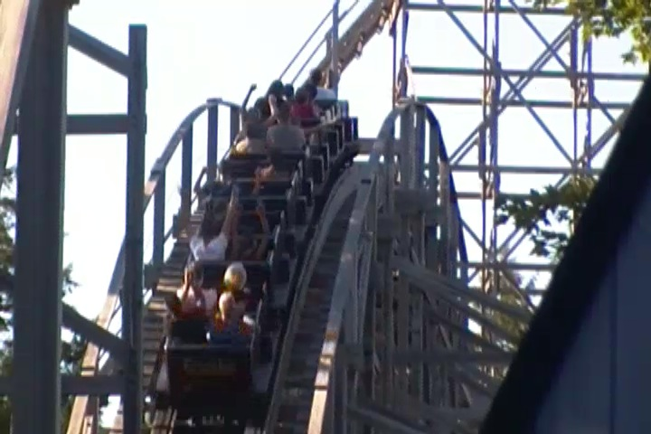
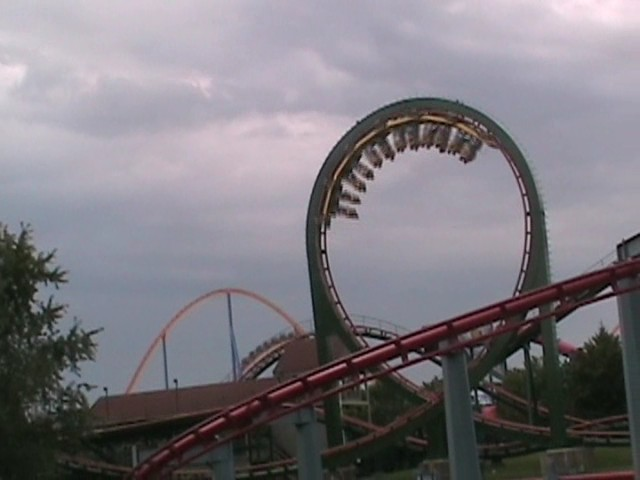
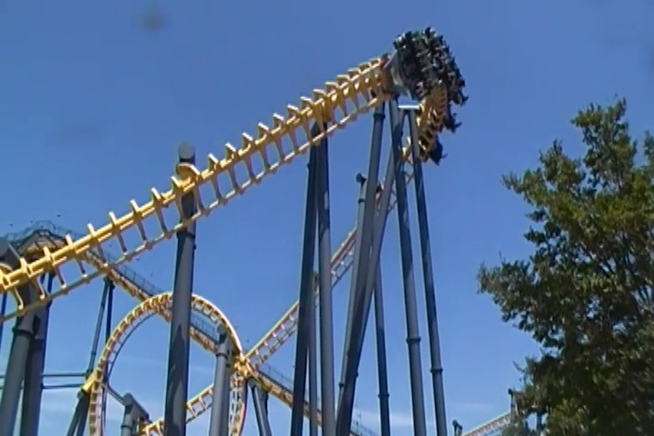
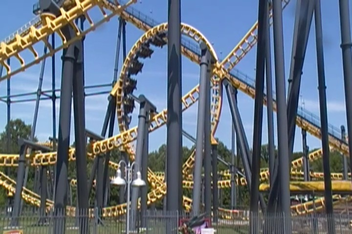
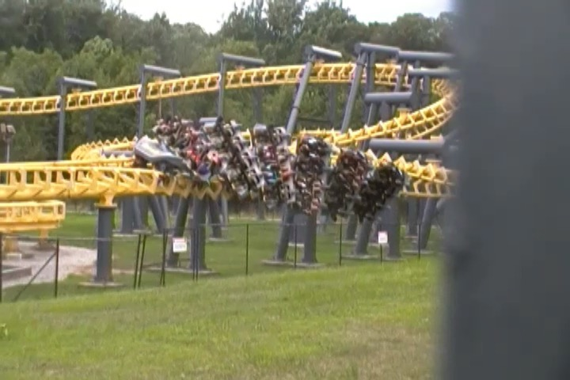
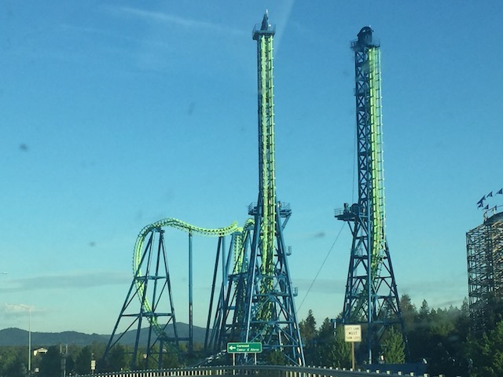
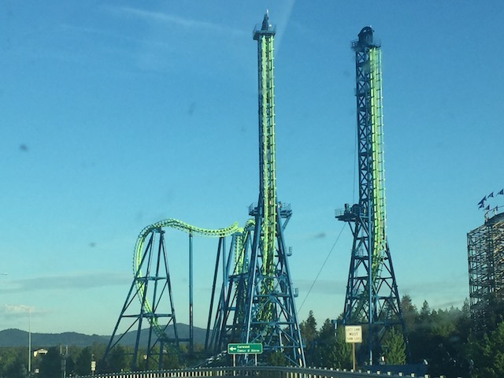
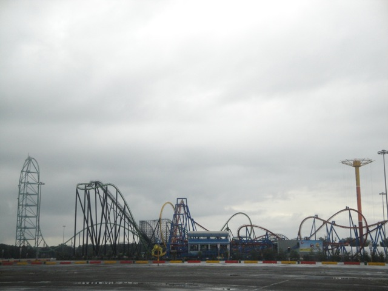

| |
Top 10 Underrated Coasters

Welcome to an Incrediblecoasters Top 10 List. When we list stuff, we actually explain why. Now, for this Top 10 List, My original plan was that I was going to make the official Top 10 Overrated Coasters List. But I decided against it for three different reasons. #1. I don't really see much of a point. It just isn't something that I'm dying to tell everyone about. And #2. It's just too easy a list to make. Anyone who reads the site will have a pretty good Idea of what we consider to be overrated. #3. I try and keep the lists positive and showcasing good things. Yeah, I do have a Top 10 Worst Coasters List, but aside from that, I don't feel like making any more negative lists.

  For those who don't, this would pretty much give you a sneak peek of what we'd include on our Overrated List if we made one. =)
Quick reminder: Overrated ≠Bad. I like all those rides I showcased. ;)
For those who don't, this would pretty much give you a sneak peek of what we'd include on our Overrated List if we made one. =)
Quick reminder: Overrated ≠Bad. I like all those rides I showcased. ;)
But then I got to thinking to myself. What about Underrated rides? Everyone always talks about how so and so is so popular and then rides it and complains about how overrated it is? But what about all those poor rides that are underrated and no one gives a crap about? This seems to be a topic that most people seem to forget about, because they're freaking underrated and don't get the attention that they deserve! Well I'm going to change that right now. So for snarky assholes who sh*t on this list saying "I find these rides to be sh*t!". Yeah, that's why it's underrated, dumbass. Now before I begin, I just want to clarify that this is the Top 10 Most Underrated Coasters List, Not the Top 10 Most Underriden Coasters List, because people frequently get the two confused. For instance, Coaster @ PNE Playland is SEVERLY underridden. Not very many people get out to ride it due to the fact that its in Vancouver, which is not a typical roller coaster destination. But its not underrated due to the fact that the few people who ride it give it the insanely high review that it so rightfully deserves (Ok, who the f*ck am I kidding. Coaster is underrated as well, just not severly). But there are several other coasters that I totally find underrated. Many of you will read this list shocked at the fact that I like it or find it underrated it is. But keep in mind, the more people who forget about the ride, or consider it to be a peice of sh*t, or both, the more underrated it is. So make sure your eyes are open. For these are some of the most underrated coasters that I have been on. (The photos here show some underrated coasters that barely missed the cut for this list).

#10.

Yankee Cannonball @
Canobie Lake Park
Salem, New Hampshire, U.S.A
While not the absolute most underrated coaster of all time, Yankee Cannonball is just one of those coasters that everyone always seems to forget about, mostly because Canobie Lake Park isn't visited nearly as much as other parks in the country due to its location, which is a shame because its a really nice little park. But when most people ride it, they'll ride it, get the credit, say "That was fun", and then totally walk away, forgetting all about this wooden coaster, which is a shame, because much like the park, it is a really fun wooden coaster. Yes, its not very big and it is very old. But hey, so are Phoinex and Coaster, and those are some of the best wooden coasters of all time. No, Yankee Cannonball is not the Coaster of the Northeast, but it is a really good wooden coaster. Definetly above average, no doubt about that. The ride does maintain its pace very well, and the hills do have some very strong floater air, or even weak ejector air. It's just all around a very pleasent deal, but most people just seem to ride it and then say "Meh". OK, it's not the best coaster ever, but I definetly feel that there is more airtime and the ride is definetly one of the better roller coasters in America. Be sure to head over to Canobie Lake Park and ride Yankee Cannonball. Its a great little wooden coaster.
 
#9.

Spin Runway @
Yomiuriland
Inagi, Tokyo, Japan
Are you sure that this is an underrated coaster and not just an underriden coaster? This is all the way out in Japan. Not a ton of coaster enthusiasts make it out to Japan (though still plenty. This isn't some super rare coaster destination). So yeah. Many enthusiasts have not ridden Spin Runway and will just have to take my word on how the coaster is. But on top of being underriden, it's also very underrated. As....this ride is good. Really freaking good! As far as spinning coasters go, it's the 4th best. Only being beaten out by Winjas (which has some of the coolest special effects on any coaster), Tornado @ Bakken (the most aggressive spinning coaster), and Gekion: Live Coaster (which is part video game, and has a launch and a freaking inversion). Aside from that, Spin Runway is the best (OK, I'm also assuming that Time Traveler is better, but I haven't ridden that yet. Gotta get back to Silver Dollar City). First off, the theming on this ride is really freaking good! Not only is it well done, but they have a really unique theme. It's themed to a fashion factory, but aside from the line, there's nothing in there about making clothes. It's just one big disco party. It's like Land Dog (the park mascot) and Lady Gaga collaberated to make a kickass spinning coaster. Speaking of which, this thing hauls ass and spins like crazy! I mean, this ride is better than Bandit, the big coaster of the park, which while not super popular, gets much more love from the coaster enthusiast than Spin Runway. Not that there's anything wrong with Bandit, it's fun. But Spin Runway is just a really good spinning coaster and one of the best of it's kind. You gotta check this ride out if you're heading to Yomiuriland.
 
#8.

Batwing @
Six Flags America
Upper Marlboro, Maryland, U.S.A
Batwing is one of those early Vekoma flying coasters. And yeah. The Vekoma flyers have gotten a bad reputation ever since B&M came out with their own flying coasters just two years later. Everyone claimed that the B&M Flyers are so much better, because they are so much smoother! B&M actually knows how to make a flying coaster and how to make it really feel like you're flying. And while B&M Flying coasters have certainly grown to have more variety, and have some really freaking good flying coasters, such as Flying Dinosaur, among others (Seriously, Flying Dinosaur is so f*cking good). But I'm sorry. When comparing the Vekoma Flyers to the Superman: Ultimate Flight clones, there's no denying it. These are superior rides. They certainly do a lot more. Superman: Ultimate Flight is pretty much just a drop, a pretzel loop, and a lot of cruising turns, before rolling through an inline twist into the brake run. The Vekoma Flyers on the otherhand, have their first drop, an overbanked turn, a vertical loop, a helix, and a lot of flipping on your back and back on your stomach. Plus, more inline twists. So it definately does more. And while I will admit. It's true that the original Vekoma Flyer, Nighthawk, is kind of rough. Not painful rough. But it definately rattles. And there's no denying that those corkscrews are clunky. But Batwing is smooth as glass. This is why Batwing is on the list and Nighthawk is not. Sure. Batwing may not be Flying Dinosaur, or any of the other really good B&M Flyers, but it is a lot of fun. Sadly, these rides are on the decline as its clone, Firehawk, was demolished at the end of 2018 (So glad I got to ride it in its last year). That makes me sad. Please keep Batwing Six Flags America. Give it a ride while you can.

#7.

Timber Terror @
Silverwood
Athol, Idaho, U.S.A
The Silverwood woodies are pretty underrated in general for the sole reason that Silverwood is a really out there park. It's an isolated park and for coaster enthusiasts not in the area, a pain in the ass to get to, as there are no other parks near Silverwood at all. So for that reason, it doesn't get much attention due to the sheer fact that these wooden coasters are underriden. But I did specifically state that I'm looking for underrated coasters. Not just underriden coasters. However, when you do talk to the enthusiasts that managed to make the journey out to Idaho for roller coasters, they're going to start talking about Tremors. Tremors is the one that wowed them, and is what they want to discuss. And yeah. Tremors is a lot of fun. I really liked it. But Timber Terror, god damn. This ride impressed me. It really freaking impressed me. I know it doesn't look like much. It's the smaller wooden coaster, and the layout it has is relatively simple. It's just an out and back coaster. Hell, it kind of looks like a cruiser snoozer. But NO!!! This thing is good. REALLY FREAKING GOOD!!! This has to be a contender for some of the strongest and best floater air around. I mean, you just fly over all those hills. And while all that is happening, you just soar out of your seat. Just out of your seat over and over again. Hell, the airtime on this ride is so good, that it was considered for the Top 10 Wooden Coasters List. Ultimately, it didn't make the list as there are better wooden coasters. But the sheer fact that it was considered shows how good and strong a ride Timber Terror is, and if I did honerable mentions, Timber Terror would make that. And while Tremors is fun and all, it's not that good. Seriously. Timber Terror may not be Coaster or Phoinex, but it is a powerful small wooden coaster that deserves more love when you head out towards Silverwood.
 
#6.

Fujiyama @
Fuji-Q Highlands
Fujiyoshida, Yamanashi, Japan
Togo coasters tend to have a really bad repuation. Manhattan Express is a terrible ride, and from what I've heard, the Togo coasters that no longer exist from America were awful. Viper @ SFGAdv, Windjammer (I just barely missed that), and Shockwave @ Kings Dominion were all terrible according to those who rode them (though oddly enough, Skyrider was fun. And while no longer at Canada's Wonderland, it still lives on at some random park in Italy). But in Japan, Togo rides are actually really good. Ultra Twisters are a ton of fun, Bandit is a fun ride, Surf Coaster is fun, Mega Coaster @ Hamanako Pal Pal is a lot of fun despite its striking resemblance to that peice of sh*t in Vegas, but by far, the king of the Togos is Fujiyama @ Fuji-Q Highlands. Yeah. A Hyper Togo exists. You'd think based on Togo's reputation in America, this would be horrible. And, while it doesn't have a bad reputation, people don't exactly praise this ride. So I didn't go in expecting much. I was expecting something along the lines of the Morgan Hypers, only rougher. HOLY CRAP!!! This ride has really freaking good airtime! I know you wouldn't think so considering that none of the drops on this ride are steep, but DAMN!!! This ride is so fun. On top of having a lot of airtime, and a lot of speed, it has these weird laterals that are super agressive, but they're fun. It's just a really fun ride. I know it's easy to overlook Fujiyama because it's in the same park as Eejanaika and Dododonpa, but you gotta check out Fujiyama. It's really unique and really fun.
 
#5.

Aftershock @
Silverwood
Athol, Idaho, U.S.A
Yep. We're back at Silverwood, as yet another Top 10 Underrated Coaster is here. Aftershock, which is one of the Giant Inverted Boomerangs. Now some of you guys may be wondering why this is so special. I mean, it's just a Boomerang. What's so special about that. Well, aside from the fact that (smooth) Boomerangs are underrated. On top of that, this is MUCH MUCH better than just a typical ordinary Boomerang. For Aftershock is one of the 5 Giant Inverted Boomerangs from Vekoma, and Holy Crap! These rides are AWESOME!!! However, many enthusiasts do not think so and they just lump in these Giant Inverted Boomerangs in with the rest of the Boomerangs. So often, I hear about how rough it is, or how its just another ordinary Boomerang, just super sized. Dude, this ride is awesome! The vertical lifts on this ride, Holy Crap! Those are amazing. This is one of the few rides where the lifthill was actually enjoyable, and the drops were pretty damn awesome as well. And man, you just fly through everything. It feels much faster than normal Boomerangs and the Invertigos. I know that these rides had a ton of trouble, and that's why they aren't everywhere. Oh man! I WISH these things were as cloned as the regular Boomerangs. Because these things are SO MUCH BETTER!!! It pains me that there are only 5 in the world (Why is the SFOG one just sitting in peices in Brazil!? Rebuild it already so we can have 6 up and running!). Luckily, I also got on DejaVu back when it was at Six Flags Magic Mountain (Now located at Six Flags New England as Goliath). So yeah. That's on this list as well (at least the SFMM version is. I keep hearing that SFNE ruined it. Please don't let that be true). So definetly make sure to check out Aftershock when you're going to Silverwood. Or if you're going to Massachussates, Spain, China, or Russia, there's a Giant Inverted Boomerang there for you to check out that you totally should. Its truely a fantastic roller coaster. Don't listen to anyone about how its just a Boomerang. That's Bullsh*t!
  
#4.

Green Lantern @
Six Flags Great Adventure
Jackson, New Jersey, U.S.A
HOLY SH*T!!! This ride has been getting A LOT of hate over the past years. For a long time, I never thought of Green Lantern as underrated as....it's fun. But at the same time, there are better Stand Up Coasters. I mean, why think about f*cking Green Lantern when I can be thinking about Riddlers Revenge and Georgia Scorcher, both much better rides than Green Lantern. It was fun, but also something I never thought about much. But over the years, I've noticed a large number of enthusiasts HATING on Green Lantern. I mean, they DESPISE this ride, comparing it to rides like Gouderix and declaring it one of the worst coasters ever! HOLY SH*T!!! Where the hell did all this hate for Green Lantern come from!? I think there's more hate for Green Lantern now than there was for f*cking Iron Wolf back when that was a stand up coaster! I don't know if Green Lantern really did just get that much worse since I last rode it since I rode it the first year it reopened at Six Flags Great Adventure. But I highly doubt it got as bad as people are claiming. Cause this ride is f*cking fun. I know I've been saying that this ride is the missing link between Mantis and Riddlers Revenge. And...yeah. It is. Admittedly, it's much closer to Mantis than Riddlers Revenge, but it's still a fun ride! I never got any headbanging, and the layout is fun. Plus, stand up coasters are just underrated in general! I know it's hard to say go out to Six Flags Great Adventure and ride Green Lantern as....this is home to El Toro. The best coaster on the planet! Go ride that instead! On top of that, there are several other better coasters at the park. Nitro, Bizarro, Batman the Ride, hell, even Kingda Ka. All better than Green Lantern. But it's still a fun coaster at Six Flags Great Adventure that's worth a ride. It's a fun ride!

#3.

Scandia Screamer @
Scandia
Ontario, California, U.S.A
While it may have been located in just a tiny little credit whoring stop, the Scandia Screamer was actually a really good coaster. However, this ride is not only underriden due to its park (please find a new home soon), but most enthusiasts tended to judge the Scandia Screamer in the same way that they judge Scandia. As just yet another credit whoring coaster, just to add to their counts. Get in, ride it, and get out. That was the main enthusiast reaction towards this ride. Hell, that's what I was expecting when I came to ride it. HOLY SH*T!!! WAS I EVER SURPRISED!!! This little coaster was freaking INSANE!!! It was a lot faster, had laterals that made a Wild Mouse blush, strong ejector air, and the longer the ride went on, the crazier everything got. It only got faster, the laterals only slammed you harder, and the airtime just tried harder and harder to eject you from your seat. And yeah, this ride was not just underridden due to being in a place like Scandia, people really didn't seem to see all the craziness that this ride has to offer. I mean, it wasn't horribly rated or anything, but people really seemed to just ignore this little ride due to the whole fact that it's in a credit whoring stop. I mean, it's ranked better than other credit whore coasters, but thats the whole main problem. This is not a credit whore coaster. I may have this credit, but I rode it many times since getting the credit. Sadly, Scandia struggled to make a profit and closed down. Bummer, but now the important goal remains. Find Scandia Screamer a new home! Seriously! This ride is really good! Fun Spot! Small Parks of America! Random Foreign Parks! FECs that want to be put on the map! Buy Scandia Screamer! I will visit you and give a sh*t about you if you save this kickass roller coaster!
 
#2.

Cobra @
La Ronde
Montreal, Quebec, Canada
Hey, it may have been located in La Ronde, but this was a very fun stand up coaster. Yeah, It wasn't as good as Riddlers Revenge @ SFMM or Georgia Scorcher @ SFOG, but Cobra was definetly a very fun stand up coaster. However, NOBODY seems to agree with me. Not only is La Ronde not a major roller coaster destination, so many people simply don't have access to this ride. But not only that, but those who did have access to this ride pretty much treated the ride like a peice of sh*t. It commonly got labeled as slow, rough, and boring and was ranked along the same levels as Boomerangs, SLCs, and Volares. Pretty much NOBODY liked this ride. Several of the reviews of Cobra that I read are negative, nobody had anything nice to say about the ride. In fact, I can only think of ONE other enthusiast who liked Cobra as well. ONLY ONE!!! Everyone else claimed the ride was slow, rough, and boring. Well, first of all. It wasn't rough. It may not have been smooth as glass, but there wasn't any pain at all. And while I will admit that the ride did get fairly dull in the second half after the midcourse brakes, HOLY CRAP!!! The first half was good. The first drop was fun, the loop was strong, the curves were fast and had good laterals, and oh man! That moment of ejector air! Stand Up Ejector Air is AMAZING!!! It feels freaky and it is completely painless. No, there is no crotch pain. Again, NO CROTCH PAIN!!! But none the less, people hated this ride. Just go on the internet, and you'll find nothing good about this ride. And sadly, it's now gone. It was SBNO for a long time, and eventually, it just got demolished. Aww man. It had so many other worse coasters (though they demolished those too as well). Cobra. We need more stand up coasters with ejector air!
 
#1.

Blue Hawk @
Six Flags Over Georgia
Austell, Georgia, U.S.A
Now some of you may be shocked to see this ride on the list. For you see, Blue Hawk, formally known as Ninja, has a BAD reputation. I mean, this coaster has a reputation for being one of the worst coasters of all time! Seriously, people would expect me to put it on my Top 10 Worst Coasters List. So when they see that one of the coasters with one of the worst reputations ever is instead, on the Top 10 Most Underrated Coasters List, they might go "What the f*ck!? You actually like this death trap!? How the hell do you like somthing so rough and terrible!?". Well, the fact that I like this ride, and the fact that it has this reputation, is the entire reason I have it as the #1 most underrated coaster. It's literally the whole point of being underrated. I mean, this coaster, which is a decent and fairly fun ride, is labeled as one of the worst rides ever, and is frequently compared to Gouderix. Now when you look at Blue Hawk, you do have to admit, it does kind of look like Gouderix. Primarily, for the fact that it and Gouderix are the only two coasters on the planet with a Butterfly. This...intersting looking inversion is the worst part of Gouderix, and on Blue Hawk, it's not nearly as bad. First of all, it's not nearly as coat-hangery. It's a bit more natural flowing, and works better. On top of that, and some fun inversions, it has some of the coolest headchoppers out of any coaster. It's kind of freaky looking, especially when flipping right over the water. And with the new vest restraints, what little headbanging it had before, is now gone. Sure, it may not be the best ride ever, but the amount of hate this ride gets is totally undeserved. Blue Hawk. It's genuinely a fun ride and not worth the hate other enthusiasts give it.
 
So now I'm sure you know what you're thinking. "Wow. That was the list. That is so wrong." Well no. First of all, this list can not be entirely accurate since I haven't ridden every single coaster in the world, so until I do, this list will never truely be accurate. And new ones will be made, so technically, no list will last forever. But really, just go and check out these very underrated coasters. They're all a lot of fun. No matter what other enthusiasts say about them. =)
|